Einführung
Zweck
Dieses Dokument beschreibt die Wireframes des späteren User Interface Designs. Die funktionalen Anforderungen dienen als Vorlage der aufgeführten Wireframes.
Gültigkeitsbereich
Der Gültigkeitsbereich beschränkt sich auf die Projektdauer vom 20.02.17 bis 02.06.17. Während dieser Zeit wird das Dokument laufend aktualisiert und stellt zu jedem Zeitpunkt einen genauen Überblick über die Wireframes zur Verfügung.
Referenzen
In der nachfolgenden Tabelle sind alle Dokumente und Links aufgelistet, welche für die Wireframes von Relevanz sind. Diese Liste wird laufend auf dem aktuellen Stand gehalten.
| Name | Referenz |
|---|---|
| Anforderungsspezifikation | funktionale Anforderungen |
| Glossar | Glossar |
| Wireframe Tool | myBalsamiq.com |
Wireframes
Die nachfolgenden Wireframes bilden die Grundlage für das spätere User Interface Design. Die entsprechenden Use Cases einer Ansicht sind jeweils aufgelistet.
Die Wireframes wurden mit der Webversion von Balsamiq Mockup erstellt. Eine interaktive Ausführung kann unter www.mybalsamiq.com gestartet werden.
Dashboard
Das Dashboard bildet eine Übersicht über Prüfungen und Aufgaben, welche dem angemeldeten Benutzer zugewiesenen sind. Als Aufgaben sind sämtliche ausstehenden Prüfungskorrekturen und Reviews sowie noch zu überprüfende Reviews aufgeführt.
Use Cases:
- UC001: Prüfungen anzeigen
- UC002: Prüfung öffnen
- UC019: ToDo's anzeigen
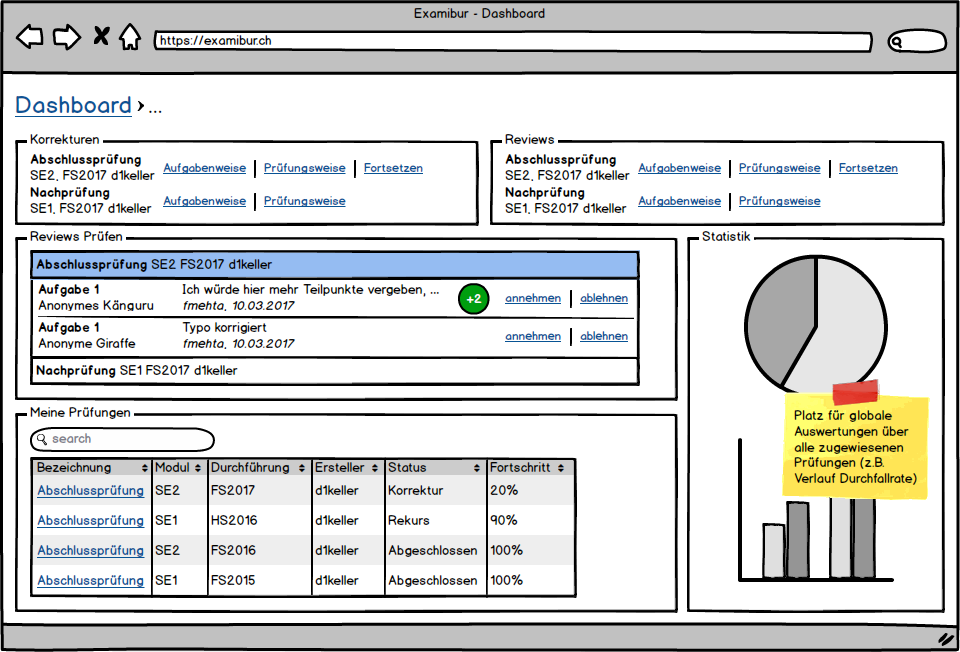
Prüfungsansicht
Die Prüfungsansicht zeigt eine erstellte Prüfungsvorlage mit ihren Rahmenbedingungen, Aufgaben und Metadaten. Ist die Prüfung bereits durchgeführt, werden auch sämtliche Teilnehmer aufgelistet.
Use Cases:
- UC003: Prüfungsteilnahmen anzeigen
- UC004: Prüfungsaufgaben anzeigen
- UC005: Prüfungsteilnahme korrigieren
- UC006: Prüfungsaufgabe korrigieren
- UC008: Prüfung für Review freigeben
- UC011: Prüfungsteilnahme reviewen
- UC012: Prüfungsaufgabe reviewen
- UC014: Review abschliessen
- UC016: Prüfungskorrektur abschliessen
- UC017: Notenskala festlegen
- UC018: Prüfung auswerten
- UC022: online Prüfungseinsicht für Studenten
- UC023: Prüfung auf Modulebene auswerten
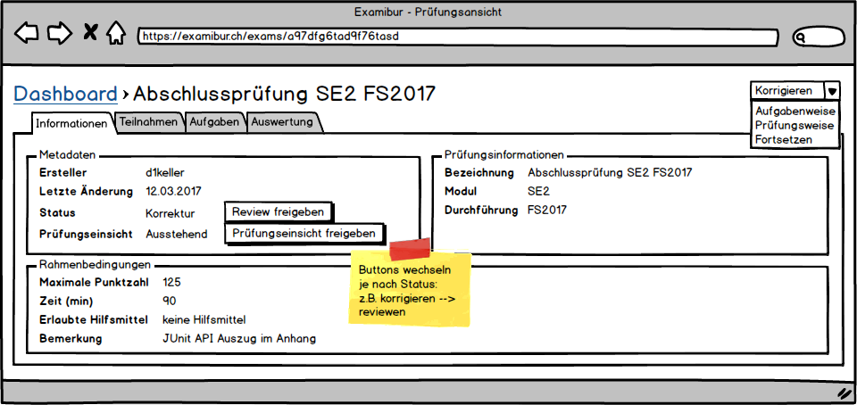 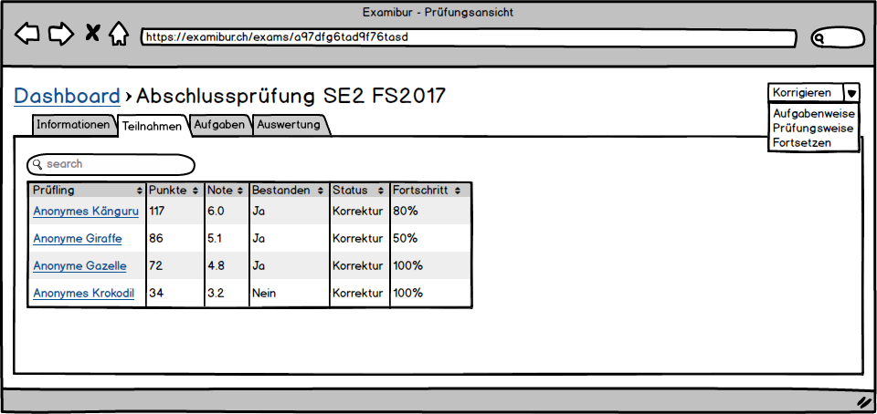 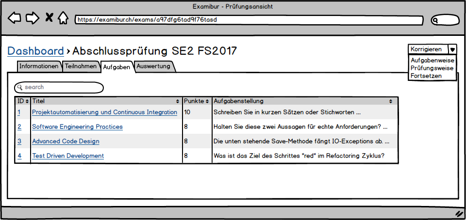 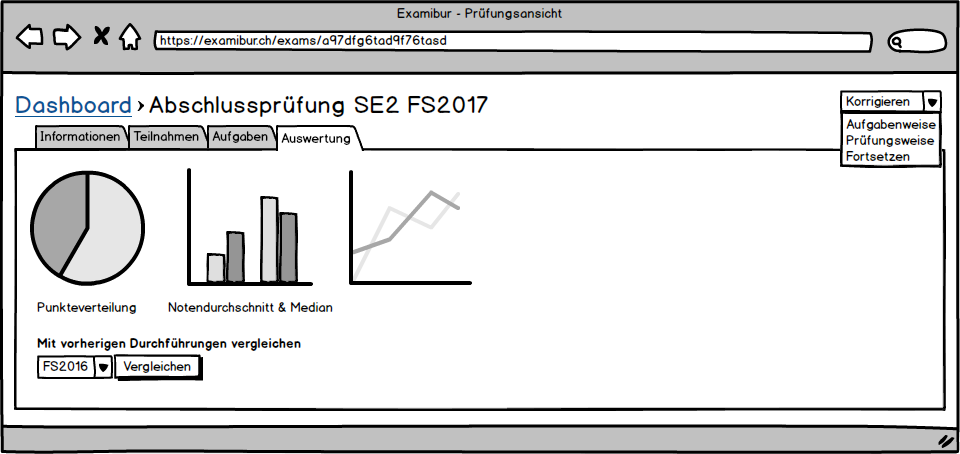
Aufgabenansicht
In der Aufgabenansicht lässt sich eine einzelne Prüfungsaufgabe einsehen. Es sind die Lösungen von sämtlichen Teilnehmern der Prüfung aufgelistet und eine Auswertung zeigt die proportionale verteilung der Punkte.
Use Cases:
- UC004: Prüfungsaufgaben anzeigen (Einzelansicht)
- UC006: Prüfungsaufgabe korrigieren
- UC012: Prüfungsaufgabe reviewen
 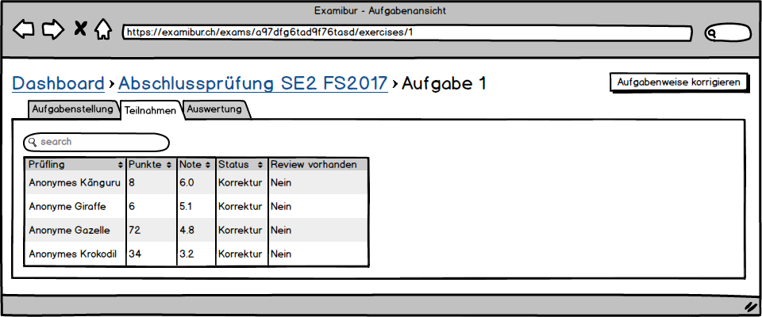
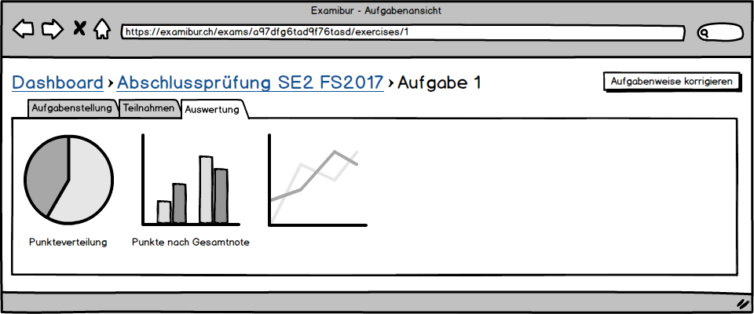
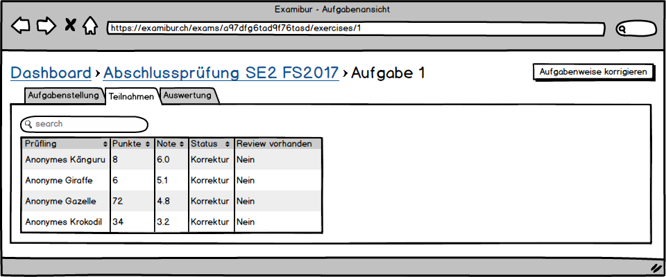
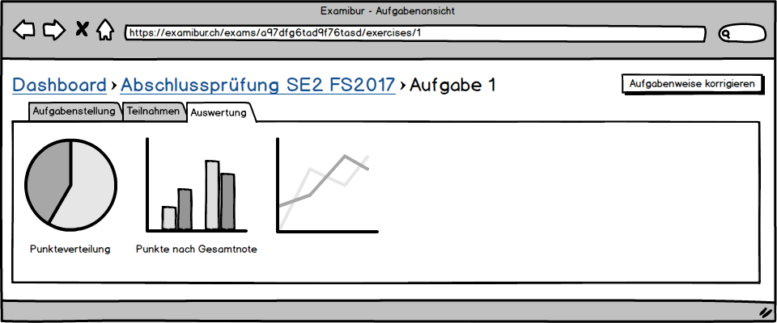
Prüfungsdurchführungsansicht
Die Prüfungsdurchführungsansicht entspricht der Prüfungsansicht mit den Daten einer einzelnen Durchführung eines Teilnehmers. Es sind all seine Aufgabenlösungen sowie die Gesamtpunktzahl und Note aufgeführt.
Use Cases:
- UC006: Prüfungsaufgabe korrigieren
- UC022: online Prüfungseinsicht für Studenten
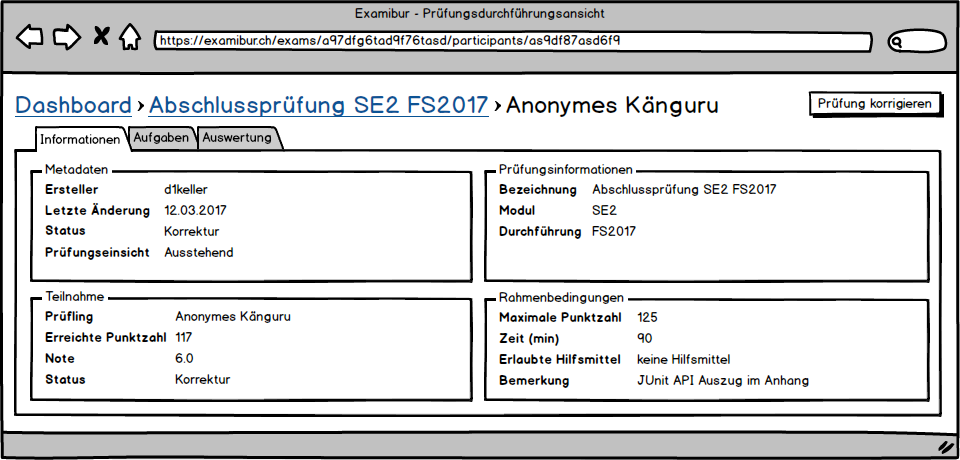 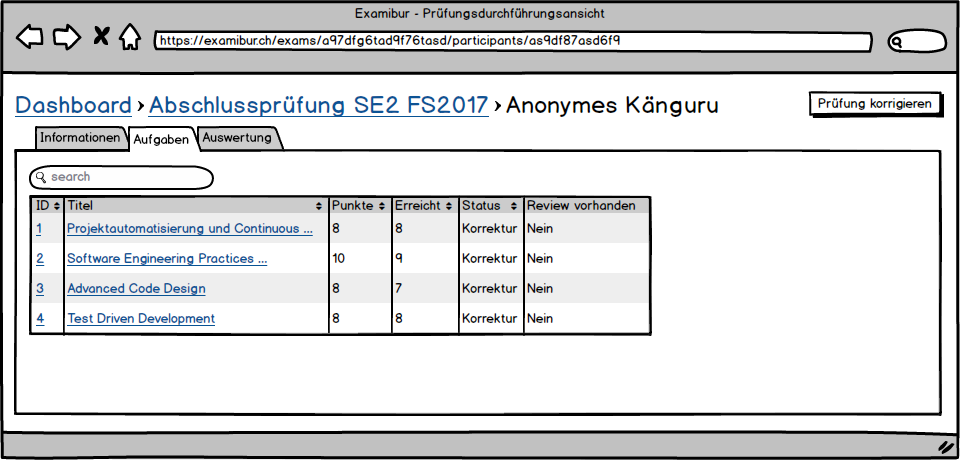 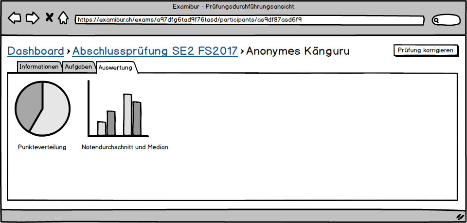
Aufgabendurchführungsansicht
Die Aufgabendurchführungsansicht bildet analog zur Prüfungsdurchführungsansicht eine Übersicht mit der Aufgabenlösung eines einzelnen Teilnehmers. Hier kann die Aufgabe korrigiert und anschliessend ein Review erstellt werden.
Use Cases:
- UC007: Aufgabe korrigieren
- UC009: Review abarbeiten
- UC013: Aufgabe reviewen
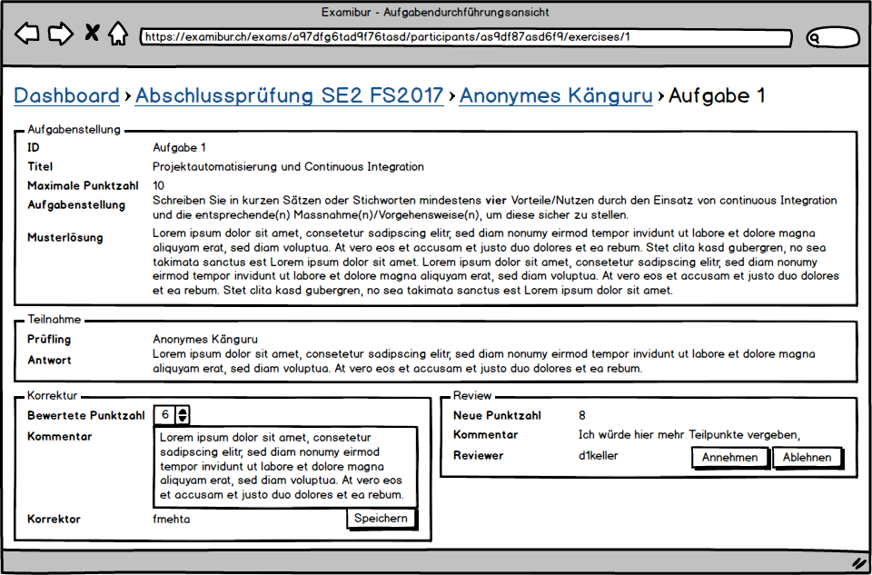